Portfolio concepts / Collection 02
20 more ideas. 20 distinct directions.
Self-initiated visual concepts across creative disciplines. GIFs present camera motion over still artwork. Suggested stacks and scopes describe how to turn each direction into a production project.
11 / Architecture & real estate
Solara — Architectural Visualization
Showcase a coastal villa through exterior renders, a furnished floor plan, and a property film.
Proposed stack
Blender, Cycles, Photoshop, Premiere Pro
Suggested build scope
3 exterior renders, a furnished plan and a 15-second camera walkthrough. Validate geometry and camera views against supplied drawings.
Full-size image · GIF preview
12 / Packaging & labels
Nouri — Packaging System
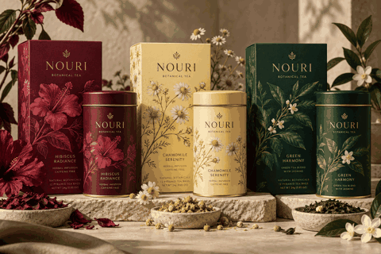
Create a botanical tea packaging family with consistent labels, print layouts, and product visuals.
Proposed stack
Illustrator, Photoshop, InDesign
Suggested build scope
3 packaging variants, a print dieline and product mockups. Check legibility, bleed and printer specifications.
Full-size image · GIF preview
13 / Children’s illustration
Little Atlas — Picture Book
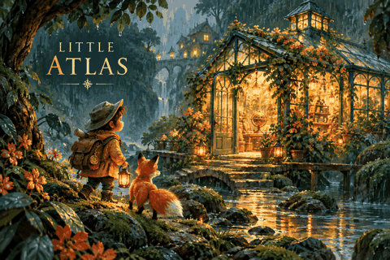
Develop a picture-book character, illustrated story spread, and cover with a consistent visual style.
Proposed stack
Procreate, Photoshop, InDesign
Suggested build scope
Character model sheet, cover and 3 illustrated spreads. Maintain character proportions and a consistent storytelling style.
Full-size image · GIF preview
14 / AI avatar & corporate training
Nova — Consent-Based Digital Presenter
Design a fictional presenter for branded training videos, with scripts, captions, and a consistent studio setting.
Proposed stack
Blender, After Effects, Premiere Pro, consent-based avatar platform
Suggested build scope
Presenter style guide, a scripted 30-second sample and captions. Use only authorized likeness and voice assets for a real presenter.
Full-size image · GIF preview
15 / Gaming video & broadcast graphics
Vanta — Esports Broadcast
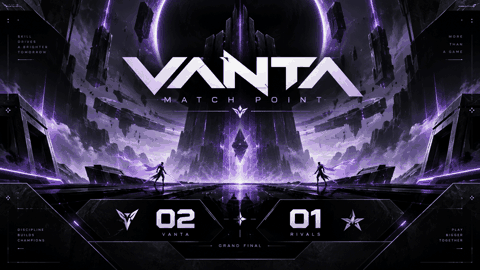
Package gaming highlights with broadcast overlays, player cards, transitions, and energetic titles.
Proposed stack
Premiere Pro, After Effects, Photoshop
Suggested build scope
20-second highlight sequence, player cards, scoreboard and transition pack. Prioritize action clarity and readable overlays.
Full-size image · GIF preview
16 / Fashion & photo retouching
Morrow — Fashion Lookbook
Build a fashion lookbook with cohesive image grading, editorial layouts, and campaign crops.
Proposed stack
Photoshop, Lightroom, InDesign
Suggested build scope
8-page lookbook, 6 retouched photos and social crops. Keep realistic skin and fabric texture through the retouch.
Full-size image · GIF preview
17 / Travel video & color grading
Fieldnote — Travel Film
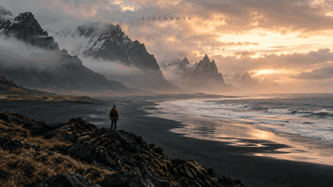
Edit a travel film with cinematic grading, subtle location titles, atmospheric sound, and short teasers.
Proposed stack
DaVinci Resolve, Premiere Pro, Audition
Suggested build scope
60-second film, title system, soundscape and vertical teaser. Match shots through exposure and color grading.
Full-size image · GIF preview
18 / Food photography & local marketing
Kanso — Restaurant Campaign
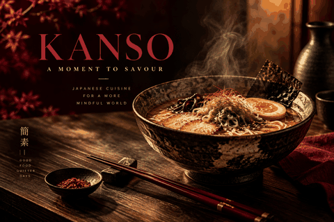
Produce a restaurant campaign with a menu, food imagery, promotional graphics, and a short reel.
Proposed stack
Photoshop, Illustrator, Premiere Pro
Suggested build scope
Food campaign poster, 2-page menu and 15-second promotional reel. Check menu legibility and campaign consistency.
Full-size image · GIF preview
19 / Typography & motion design
Pulse — Kinetic Typography
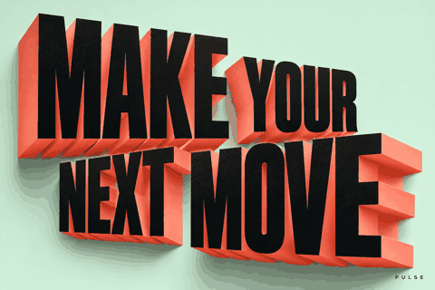
Create a typography-led opening with beat-synced motion, expressive transitions, and a reusable title system.
Proposed stack
After Effects, Illustrator, Premiere Pro
Suggested build scope
10-second typography animation plus reusable title controls. Demonstrate timing, easing and beat synchronization.
Full-size image · GIF preview
20 / Music video & audio-reactive visuals
Prism — Music Visualizer
Design a music visualizer with abstract scenes, audio-driven motion, and cover artwork.
Proposed stack
Blender, After Effects, DaVinci Resolve
Suggested build scope
30-second visualizer loop and album artwork. Match motion to the supplied licensed audio.
Full-size image · GIF preview
21 / Mobile UI/UX
Thread — Mobile App Design
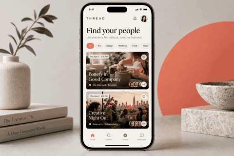
Design a community app with onboarding, a discovery feed, profiles, and accessible navigation.
Proposed stack
Figma, Illustrator; optional Flutter implementation
Suggested build scope
Onboarding, discovery, event details and profile screens. Prototype key flows and check accessibility and mobile spacing.
Full-size image · GIF preview
22 / Infographics & information design
Meridian — Data Storytelling
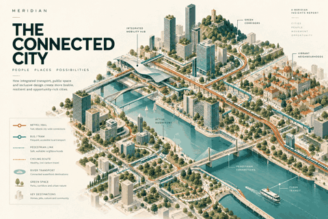
Turn a supplied report into readable infographics, visual explanations, and a polished report layout.
Proposed stack
Illustrator, Figma, InDesign
Suggested build scope
One infographic, a report cover and 4-page report layout. Use verified client-supplied data for any quantitative graphics.
Full-size image · GIF preview
23 / E-commerce & product imagery
Cove — E-commerce Art Direction
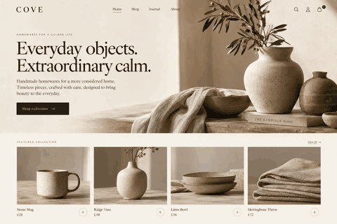
Create coordinated product images, storefront banners, collection visuals, and promotional assets.
Proposed stack
Photoshop, Illustrator, Figma; optional Shopify implementation
Suggested build scope
Homepage art direction, 6 product images and 3 collection banners. Plan responsive crops and consistent product presentation.
Full-size image · GIF preview
24 / Cause-based branding & fundraising
Evergreen — Nonprofit Campaign
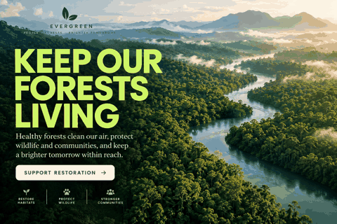
Develop a nonprofit campaign with a visual identity, donation-page design, and social storytelling assets.
Proposed stack
Illustrator, Photoshop, Figma, Premiere Pro
Suggested build scope
Campaign identity, donation-page design and 5 social assets. Use clear calls to action and substantiated impact claims.
Full-size image · GIF preview
25 / Events & conference graphics
Signal — Event Identity
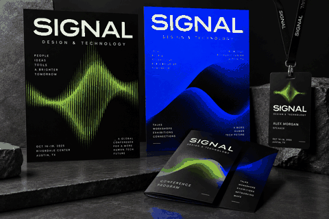
Create a conference identity with posters, badges, stage visuals, and a motion opener.
Proposed stack
Illustrator, InDesign, After Effects
Suggested build scope
Event poster, badge, program and 8-second stage opener. Test distance legibility and print-safe exports.
Full-size image · GIF preview
26 / Mascot illustration & 2D animation
Paws & Play — Character System
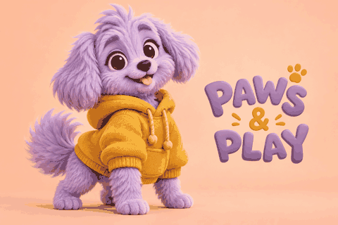
Develop an original mascot with expressions, poses, stickers, and short animation loops.
Proposed stack
Illustrator, Photoshop, After Effects, Rive
Suggested build scope
Mascot turnaround, 6 expressions, 6 stickers and one short rigged animation. Keep consistent shape language across poses.
Full-size image · GIF preview
27 / Portfolio web design
Aperture — Photographer Portfolio
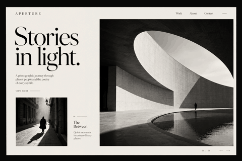
Design a photographer’s portfolio with a clear gallery system, project pages, and an inquiry flow.
Proposed stack
Figma; optional Next.js, TypeScript, Tailwind CSS
Suggested build scope
Homepage, gallery, project detail and contact screens. Build responsive behavior and keyboard-accessible navigation.
Full-size image · GIF preview
28 / Wedding video & cinematic editing
Bloom — Wedding Film
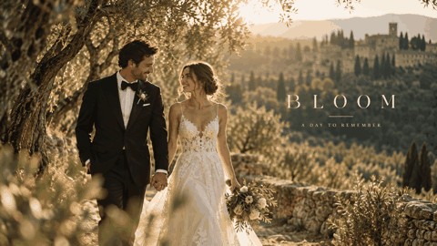
Create a wedding-film package with a cinematic highlight, ceremony edit, titles, and social teaser.
Proposed stack
Premiere Pro, DaVinci Resolve, Audition
Suggested build scope
3-minute highlight film, clean ceremony edit and 20-second teaser. Synchronize dialogue and balance music against speech.
Full-size image · GIF preview
29 / SaaS UI & product explainer
Contour — Product Onboarding
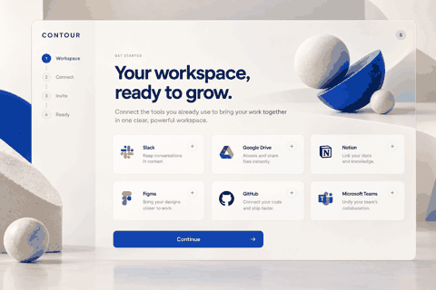
Design a SaaS onboarding journey and explainer assets that guide users from setup to a useful first result.
Proposed stack
Figma, Illustrator, After Effects; optional React implementation
Suggested build scope
4-step onboarding prototype, connection states and a 30-second explainer. Include loading, empty, success and error states.
Full-size image · GIF preview
30 / Interior design & 3D visualization
Hearth — Interior Visualization
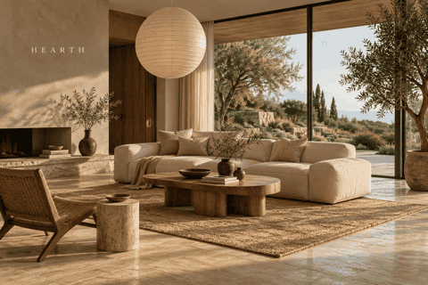
Produce a furnished interior concept with realistic materials, lighting studies, and a camera walkthrough.
Proposed stack
Blender, Cycles, Photoshop, DaVinci Resolve
Suggested build scope
3 interior renders, material palette and 10-second walkthrough. Validate scale, lighting and material realism.
Full-size image · GIF preview